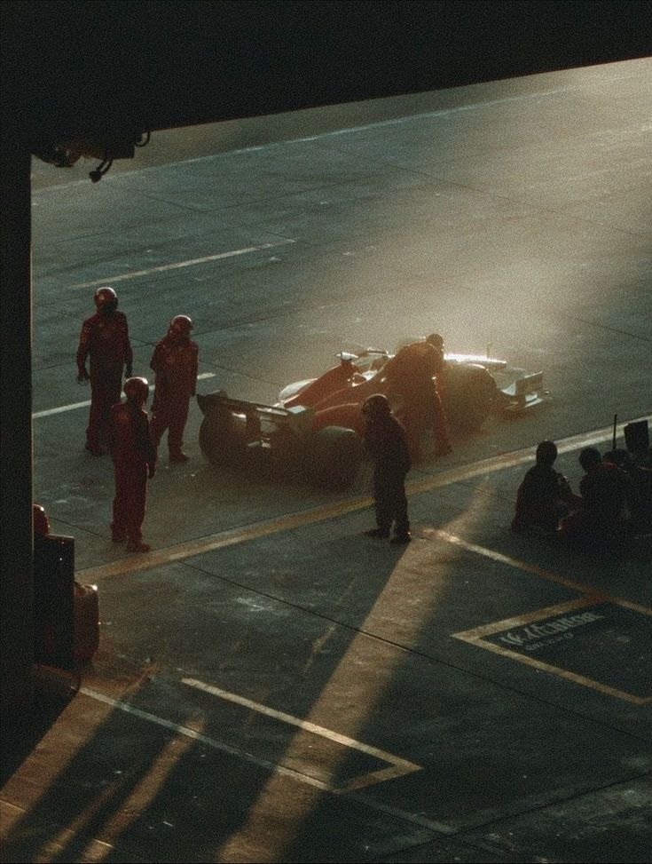
LA CARRERA TODAVÍA
NO EMPEZÓ.
la historia, sí.
descubrí los patrones que pueden anticipar lo que viene.
LA GEOMETRÍA TAMBIÉN CUENTA.
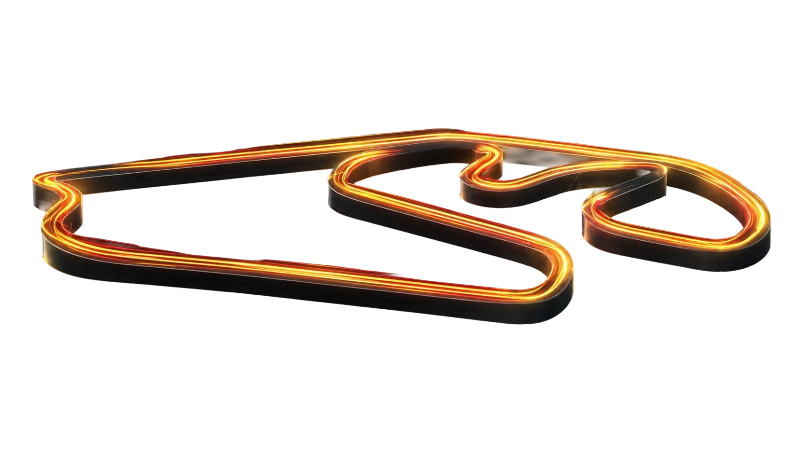
El nombre Interlagos significa literalmente «entre lagos». El autódromo se construyó entre los embalses de Guarapiranga y Billings, en São Paulo.
Dato geográfico e históricoEl trazado original medía casi 8 km. En 1990 fue rediseñado y acortado para volver a recibir la Fórmula 1. ¡El circuito actual es prácticamente la mitad!
Historia del trazadoLa famosa curva fue incorporada en la reforma de 1989 siguiendo una propuesta de Ayrton Senna. Después, recibió su nombre como homenaje al piloto brasileño.
Homenaje y trazado míticoInterlagos
Red Bull Ring
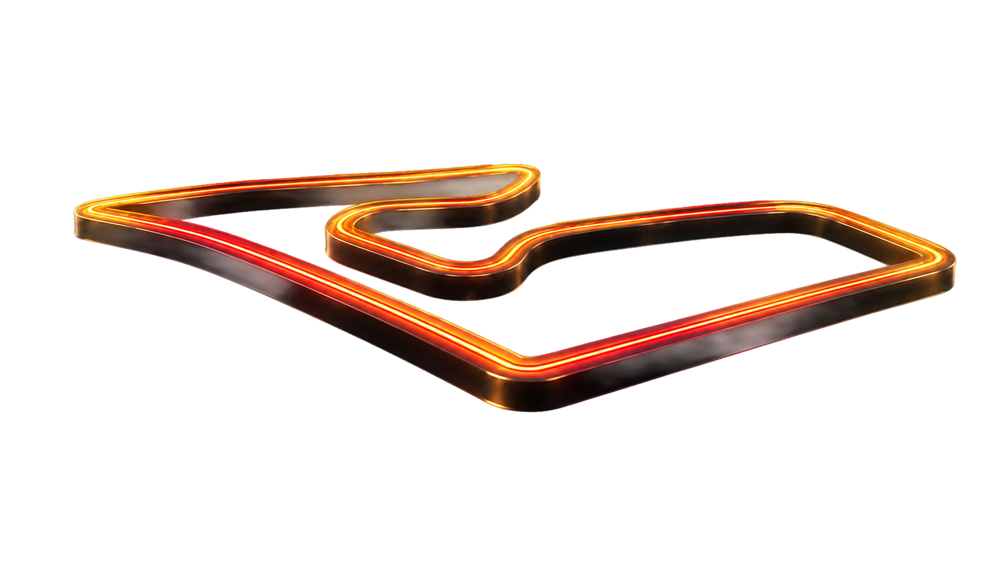
Curva 1 de Brasil y Curva 4 de Austria son frenadas a ciegas en descenso. Descargan el tren trasero con la misma violencia milimétrica.
Junção = Curva 3 austríaca. Trepadas pronunciadas donde la tracción mecánica manda: si el motor y el piso empujan en Spielberg, vuelan en San Pablo.
Giros de apenas 70 segundos. Curvas enlazadas continuas donde el piloto no relaja el cuello y el neumático derecho hierve sin respiro.
CHARLES LECLERC
Precisión milimétrica en curvas lentas enlazadas y resistencia a la degradación térmica. Chasis Ferrari con ventaja neta (+0.11) si el asfalto sube de temperatura.
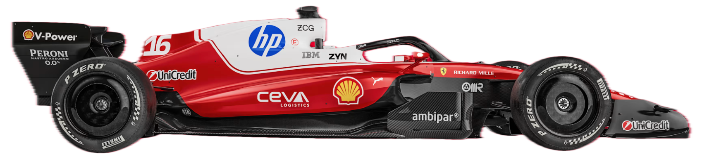
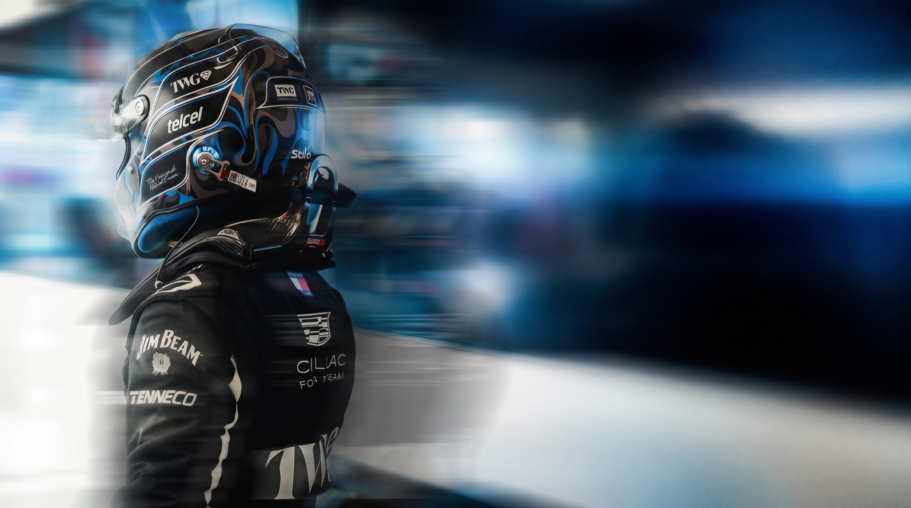
#77 Bottas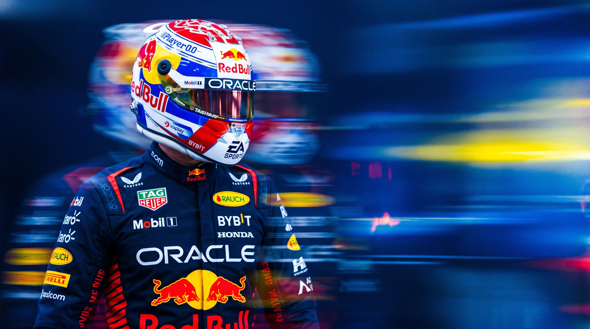
#1 Verstappen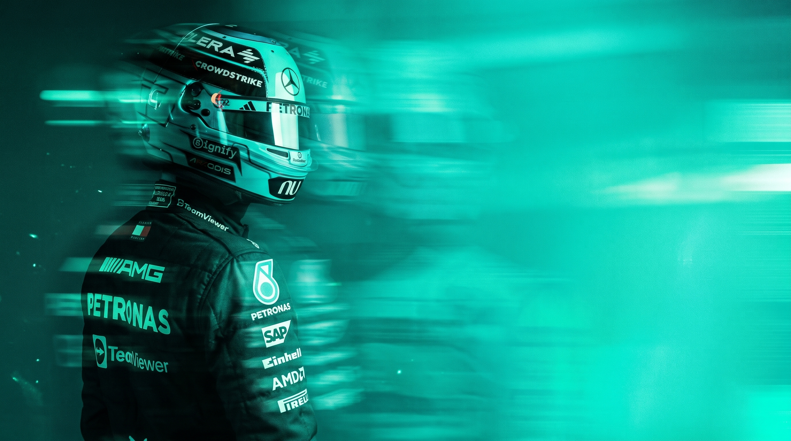
#63 Russell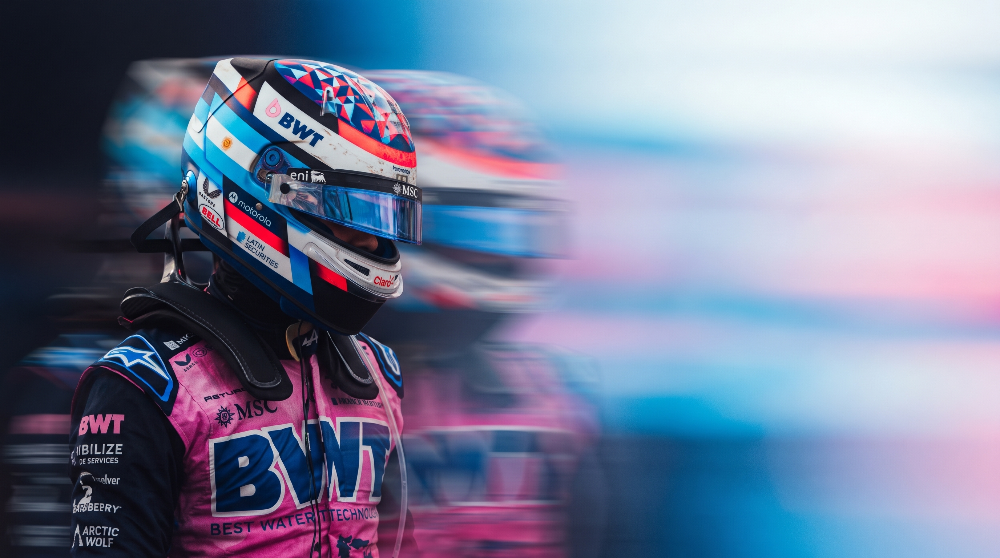
#43 Colapinto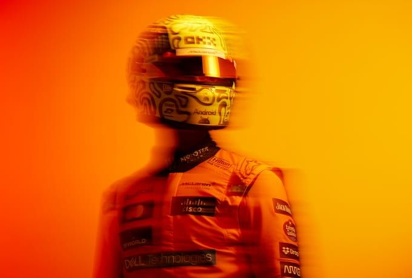
#4 Norris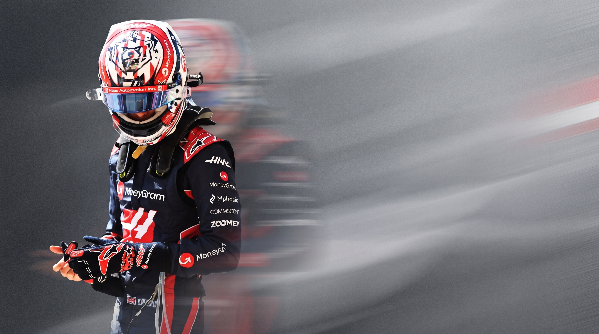
#87 Bearman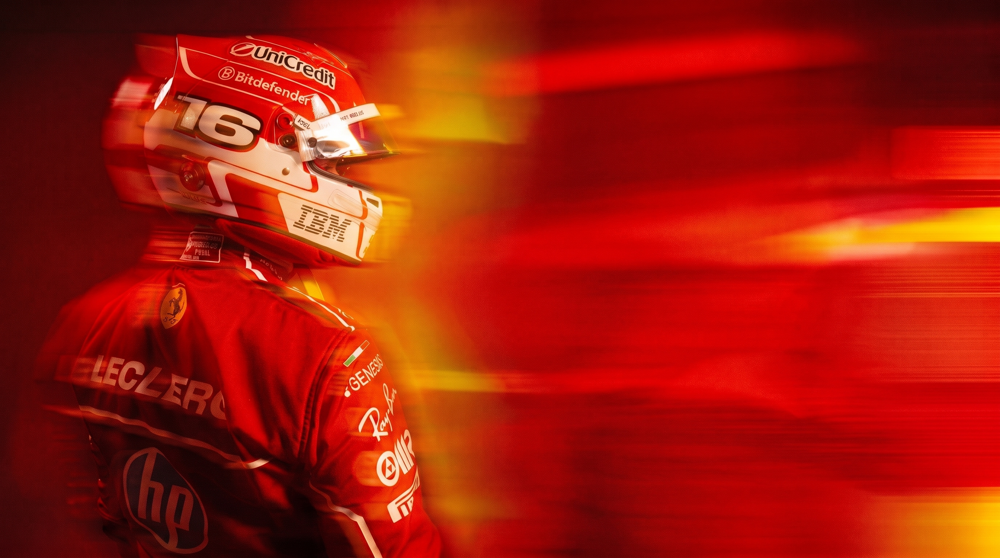
#16 Leclerc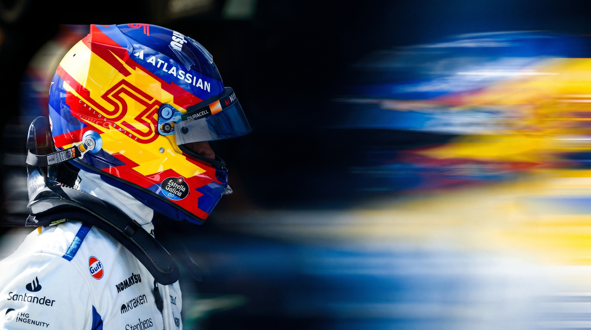
#55 Sainz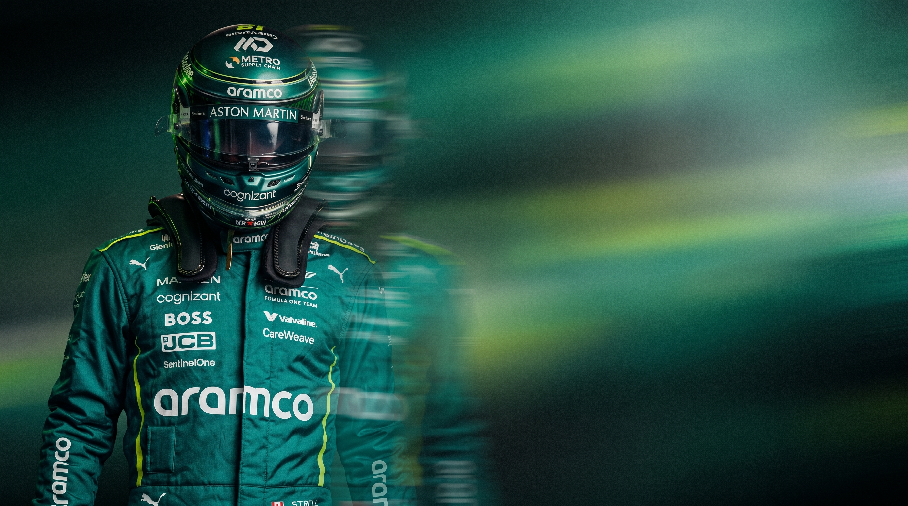
#18 Stroll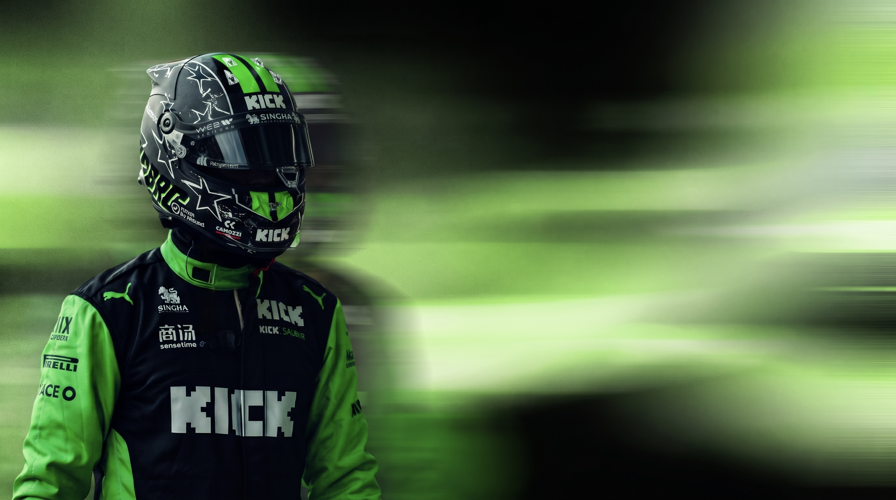
#27 Hülkenberg